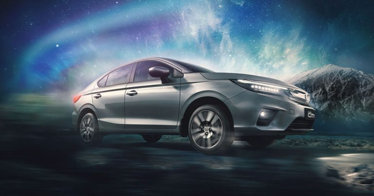
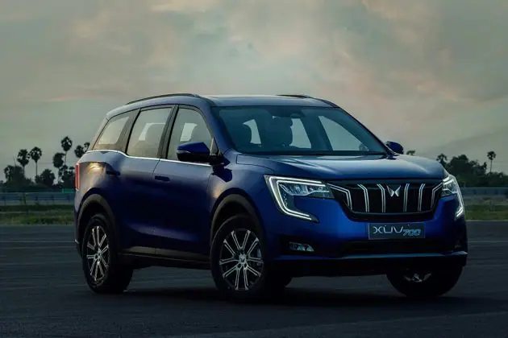

Performance oriented car under 20 lakhs
1. SKODA KUSHAQ 1.5 TSI 9.54sec

Kushaq is a 1.5-litre TSI petrol engine that produces 150 PS of power with 250 Nm mated to either a 6-speed manual or 7-speed DSG. Capable enough to sprint 0 to 100 kmph in just 9.54 seconds, the Skoda Kushaq is truly fast,the Kushaq will be offered in three variants, Active, Ambition, and Style.
𝗣𝗿𝗶𝗰𝗲 :- Rs 10.50-17.60 lakh (ex-showroom,India).
𝟬-ğŸğŸ¬ğŸ¬ 𝗸𝗺𝗽𝗵 :- 9.54 seconds
2. kIA SELTOS 1.4 TURBO 9.97sec

The Kia Seltos was Kia’s first offering that was introduced in the competitive midsize SUV market in August 2019. Giving fierce competition to already popular vehicles, the Kia Seltos displayed what the brand was truly capable of. With a modern stance, ample features, posh interiors, powerful engine and impeccable safety, the Kia Seltos became an instant success.The Kia Seltos’ most performance oriented vehicle comes with a 1.4-litre turbocharged petrol producing 140 PS of power with 242 Nm of torque mated to either a 6-speed manual gearbox or a 7-speed DCT transmission. This engine coupled with a 7 speed DCT can make the Seltos achieves a 0-100 kmph run in about 9.97 seconds as tested.
𝗣𝗿𝗶𝗰𝗲 :- Rs 14-17 lakh (ex-showroom,India).
𝟬-ğŸğŸ¬ğŸ¬ 𝗸𝗺𝗽𝗵 :- 9.97 seconds
3. HYUNDAI CRETA TURBO 10.25sec

The Hyundai Creta Turbo is a performance-focused offering with a 1.4-litre turbo petrol motor that offers 140 PS and 242 Nm. The compact SUV is aggressively styled with many sporty highlights. Exteriors on the Hyundai Creta Turbo are stylised with stylish projector headlamps, black-colour roof, sporty rear spoiler, and Turbo badges.
𝗣𝗿𝗶𝗰𝗲 :- Rs 16.28 lakh (ex-showroom,India).
𝟬-ğŸğŸ¬ğŸ¬ 𝗸𝗺𝗽𝗵 :- 10.25 seconds
4. HONDA CITY 1.5 iVTEC 10.30sec

Honda City is a 1.5-liter i-VTEC petrol engine, producing 121 PS of maximum power with 145 Nm of peak torque. This capable engine is mated to a highly capable 7-speed CVT automatic transmission that is not only convenient but also efficient, returning an impressive 18.4 kmpl despite being a large engine.
𝗣𝗿𝗶𝗰𝗲 :- Rs 10.99-14.94 lakh (ex-showroom,India).
𝟬-ğŸğŸ¬ğŸ¬ 𝗸𝗺𝗽𝗵 :- 10.30 seconds
5. HYUNDAI i20 1.5 DIESEL 11.05sec

The fastest variant of the new i20 is powered by Hyundai’s 1.5-litre diesel engine producing 100 PS of maximum power with 240 Nm of torque mated to a sole 6-speed manual. And when it comes to speed, the i20 leaves no stone unturned and can do a 0-100 sprint in about 11.05 seconds with an achievable top speed of 165 kmph. The turbo charged diesel engine is also efficient with a fuel efficiency of approximately 19-20 kmpl.
𝗣𝗿𝗶𝗰𝗲 :- Rs 11.34 lakh (ex-showroom,India).
𝟬-ğŸğŸ¬ğŸ¬ 𝗸𝗺𝗽𝗵 :- 11.05 seconds
6. MAHINDRA XUV 700 11.65sec

Mahindra XUV700 is a five and seven-seat SUV by Mahindra launched at the end of September 2021. It comes with four distinctive variants and three different powertrain options. This compact SUV takes on the Hyundai Alcazar, MG Hector Plus, Tata Harrier, Hyundai Creta, Kia Seltos and MG Astor.
𝗣𝗿𝗶𝗰𝗲 :- Rs 12.00-21.00 lakh (ex-showroom,India).
𝟬-ğŸğŸ¬ğŸ¬ 𝗸𝗺𝗽𝗵 :- 11.65 seconds